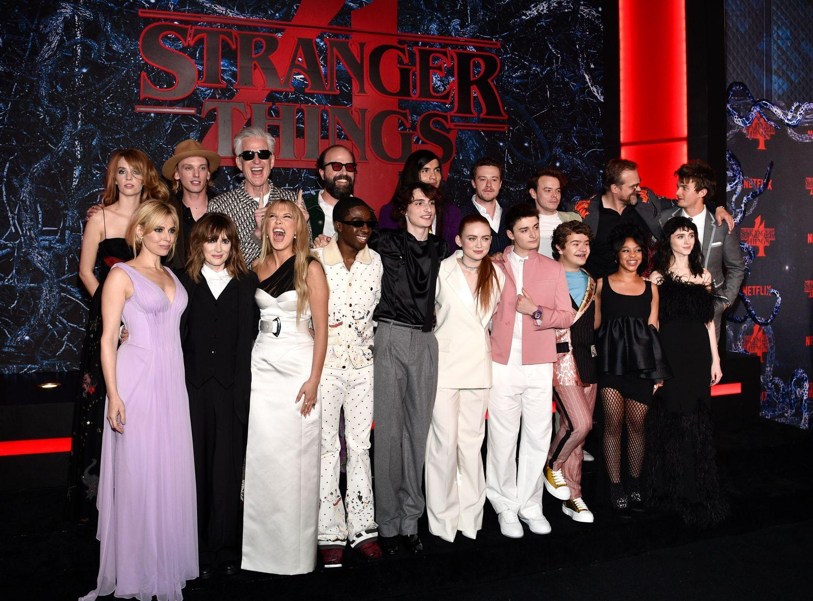

Desde su estreno, Stranger Things ha recibido numerosos premios y nominaciones. Entre los más importantes se encuentran los premios Premios Emmy, donde la serie ha sido reconocida en categorías como mejor drama, mejor dirección y efectos visuales.
Además, el elenco también ha sido premiado en los Screen Actors Guild Awards, destacándose por su trabajo en conjunto.
Actores como Millie Bobby Brown y David Harbour han recibido nominaciones individuales por sus actuaciones.
En general, la serie ha sido muy valorada tanto por la crítica como por el público, consolidándose como una de las producciones más exitosas de los últimos años.
